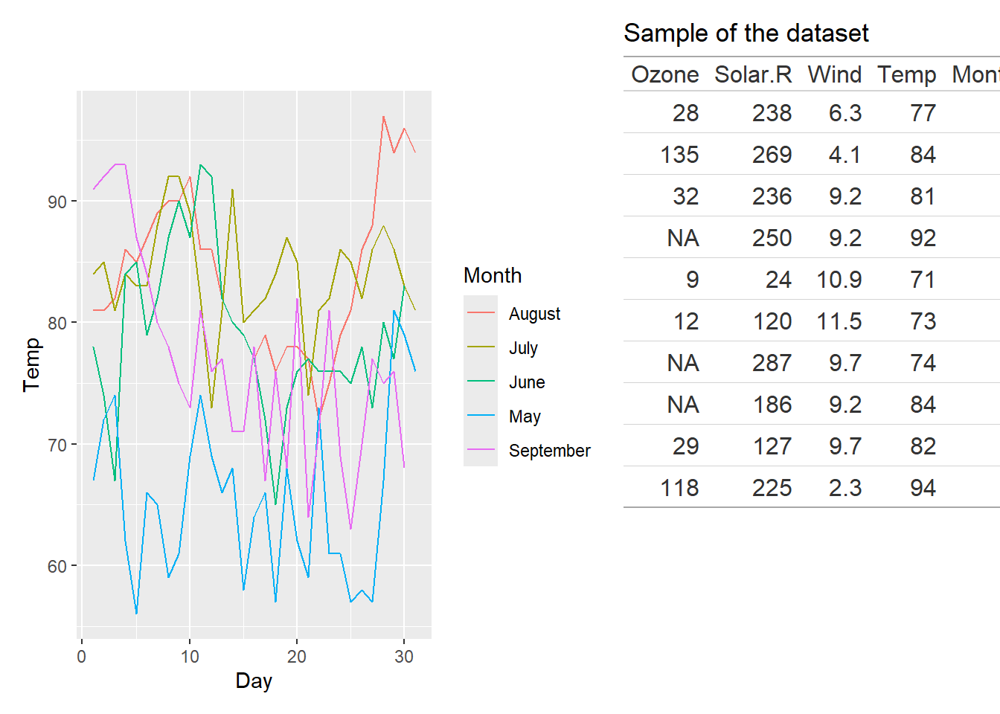

8 patchwork：拒绝ps，R内实现多图拼接
8.1 R包介绍
Patchwork 是一个软件包，旨在使 R 中的绘图合成变得极其简单和强大。它主要面向 ggplot2 的用户，无论绘图的复杂程度如何，它都能不遗余力地确保 ggplots 正确对齐。
注意：仅用于ggplot2的绘图，R的base绘图不能用patchwork拼接
链接:CRAN链接
学习手册:学习手册
8.3 R包使用
8.3.1 先生成多图准备着
library(ggplot2)
library(patchwork)
p1 <- ggplot(mtcars) +
geom_point(aes(mpg, disp)) +
ggtitle('Plot 1')
p2 <- ggplot(mtcars) +
geom_boxplot(aes(gear, disp, group = gear)) +
ggtitle('Plot 2')
p3 <- ggplot(mtcars) +
geom_point(aes(hp, wt, colour = mpg)) +
ggtitle('Plot 3')
p4 <- ggplot(mtcars) +
geom_bar(aes(gear)) +
facet_wrap(~cyl) +
ggtitle('Plot 4')

8.4 添加图注
patchwork提供了plot_annotation函数来实现图注的添加

8.5 图表拼接
8.5.1 基本操作
patchwork还支持将表格和图表拼接起来，需要注意的是，表格和图表的拼接需要使用gt包
#install.packages("gt")
library(gt)
library(ggplot2)
library(patchwork)
p1 <- ggplot(airquality) +
geom_line(aes(x = Day, y = Temp, colour = month.name[Month])) +
labs(colour = "Month")
aq <- airquality[sample(nrow(airquality), 10), ]
p1 + gt(aq) + ggtitle("Sample of the dataset")
8.5.2 参数调整
wrap_table() 可以控制其中的一些行为。首先，我们可以减小表格中的字体大小，使其变小，但也可以为其留出更多空间。我们可以使用 plot_layout(widths = …)来做到这一点，但这需要我们进行大量的猜测才能做到恰到好处。值得庆幸的是，patchwork 足够聪明，可以帮我们解决这个问题，我们可以使用 wrap_table() 中的 space 参数指示它这样做。将空间参数设置为 “free_y”后，patchwork 就会将宽度固定为表格宽度，但保持高度自由：


如果空间固定在 Y 方向，而表格中有任何来源注释或脚注，则这些注释或脚注会像列头一样，根据面板设置放置在面板区域之外。
8.5.3 其它
图表拼接是patchwork的最新功能，详细的教程参见链接